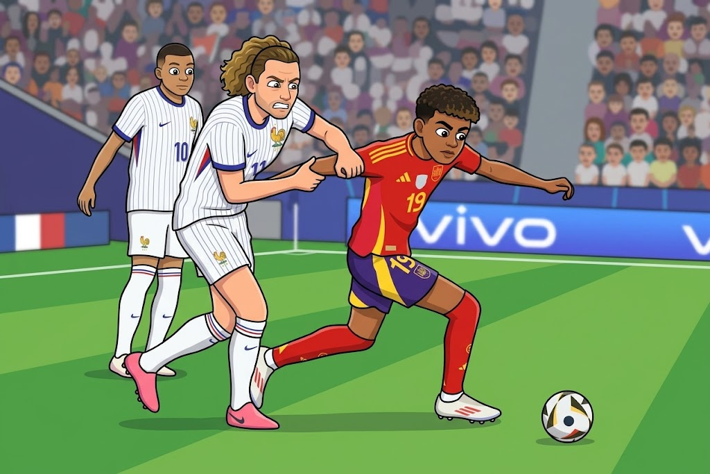

Introducción para el alumnado
¿Te has parado alguna vez a pensar cuántas matemáticas hay en un campo de fútbol?
Cuando vemos un partido pensamos en jugadores, pases, goles y estrategias. Sin embargo, si observamos el campo con atención, encontramos rectángulos, círculos, líneas, ángulos, triángulos y otras figuras geométricas.

Las matemáticas también nos permiten calcular distancias, superficies y volúmenes, estudiar movimientos y simetrías o descubrir cómo funcionan las proporciones y las figuras semejantes.
En esta Situación de Aprendizaje te convertirás en miembro de un equipo de análisis matemático de la Selección Española. Tu misión será utilizar la geometría para investigar diferentes elementos relacionados con el fútbol y resolver distintos retos.
Aprenderás a trabajar con triángulos y el teorema de Pitágoras, transformaciones geométricas, teorema de Thales, semejanza, frisos y mosaicos, perímetros, áreas y volúmenes.
Además, tendrás que aplicar todo lo aprendido para superar diferentes retos y crear tu propio Dossier Geométrico de la Selección, una infografía en la que resumirás y explicarás tus aprendizajes con tu propia voz.
Prepárate para descubrir que, detrás de muchas jugadas, campos y estadios, también se esconden las matemáticas.
⚽ + 📐 = 🧠
Introducción general
La presente Situación de Aprendizaje está diseñada para 4º de ESO Matemáticas A y utiliza el fútbol como contexto motivador para abordar y aplicar diferentes contenidos relacionados con la geometría.
A partir de elementos presentes en un campo de fútbol y en un estadio, el alumnado explorará figuras planas y cuerpos geométricos, clasificación de triángulos, teorema de Pitágoras, transformaciones geométricas, teorema de Thales, semejanza, frisos y mosaicos, perímetros, áreas y volúmenes.
La propuesta parte de situaciones cercanas para favorecer un aprendizaje significativo, competencial y funcional, conectando los conceptos matemáticos con situaciones reconocibles por el alumnado. La resolución de problemas, el razonamiento, la representación gráfica y la comunicación matemática tendrán un papel fundamental durante el desarrollo de la situación.
La secuencia se organiza en las fases de Motivar, Activar, Explorar, Estructurar, Aplicar y Concluir-Evaluar. El alumnado irá construyendo progresivamente sus conocimientos hasta aplicarlos en diferentes retos y elaborar un producto final.
Como cierre, cada alumno o alumna elaborará una infografía geométrica, acompañada de una explicación mediante su propia voz. De este modo, además de demostrar los aprendizajes matemáticos adquiridos, deberá seleccionar información, organizarla, representarla y comunicarla.
El contexto deportivo permitirá, asimismo, incorporar la igualdad de género y la visibilización del deporte femenino, junto con el desarrollo de la competencia digital y de diferentes formas de acceso y expresión del aprendizaje.